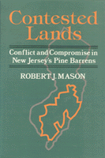

<body bgcolor="#FFFFFF" text="#000000" link="#0000FF" vlink="#CC0000" alink="#CC0000"><center><hr width="350" size="1" align="center" noshade>Mason explores the changing politics of place in New Jersey's Pine Barrens<hr width="350" size="1" align="center" noshade><p><a href="https://cdcshoppingcart.uchicago.edu/Cart/ChicagoBook.aspx?ISBN=9780877229254&&PRESS=temple" target="_top">Buy this book!</a> | <a href="https://cdcshoppingcart.uchicago.edu/Cart/Cart.aspx?PRESS=temple" target="_top">View Cart</a> | <a href="https://cdcshoppingcart.uchicago.edu/Cart/Cart.aspx?PRESS=temple" target="_top">Check Out</a></p><p></p></center><!--none//--><h1>Contested Lands</h1>
<h3>Robert J. Mason</h3>
<P>cloth 0-87722-925-2 $77.50, May 92, <FONT COLOR=#990033>Out of Stock Unavailable</FONT>
<BR> 256 pp
6x9
</P><p>The nation’s first and only "national reserve," the Pinelands of New Jersey is located in the middle of the densely populated urban corridor between New York City and Philadelphia. Possessing vast quantities of pure groundwater, distinct flora and fauna, and a fascinating history of human occupancy and resource exploitation, the Pine Barrens is managed by a 15-member commission appointed at the federal, state, and local level. In his discussion of the implementation of the Pinelands Commission’s regional plan, Robert Mason explores the changing politics of place and the associated conflicts of interest that have emerged.
<p>The Pinelands program is widely viewed as a land-use and regional planning experiment of national significance. While the commission is sustained by legislative and gubernatorial support and an absence of well-organized public opposition, it still has had to accommodate community and rural entrepreneurial interests. In order to convey some sense of the social, political, and economic texture of the Pinelands, Mason examines three communities&#151Woodland Township, Hamilton Township, and Manchester Township.
<p>The Pinelands experience offers a unique model for the management of valued places across the nation and provides valuable lessons about the human problems that confront ecologically-driven planning schemes with human settlement patterns, political subdivisions, and economic systems.
<BR>&nbsp;<h2>Contents</h2><P>
<p>Maps and Tables
<br>Acknowledgments
<br>Abbreviations
<br>1. Introduction
<br>2. Regional and Environmental Planning in the United States
<br>3. One Region or Many?
<br>4. Evolution of Planning and Management
<br>5. Actors and Interests
<br>6. Three Communities
<br>7. A Successful Bureaucracy
<br>8. Pinelands Planning in Perspective
<br>References
<br>Index
</P><BR>&nbsp;<H2>About the Author(s)</H2>
<P><b>Robert J. Mason</b> is Assistant Professor of Geography and Urban Studies at Temple University.</P>
<BR><H2>Subject Categories</H2>
<p><A HREF="/tempress/urban.html" TARGET="_top">Urban Studies</a>
<BR><A HREF="/tempress/political.html" TARGET="_top">Political Science and Public Policy</a>
</p>
<BR><h2 class="inpageheading">In the series</H2>
<P><I><a href="http://www.temple.edu/tempress/conflicts.html" onMouseOver="window.status='Click for other books in this series!'; return true;" onMouseOut="window.status=''; return true;" target="_top">Conflicts in Urban and Regional Development</a></i>, edited by John R. Logan and Todd Swanstrom.
</p><p><i>Conflicts in Urban and Regional Development</i>, edited by John R. Logan and Todd Swanstrom, includes books on urban policy and issues of city and regional planning, accounts of the political economy of individual cities, and books that compare policies across cities and countries.</p>
<p align="center"><a href="https://cdcshoppingcart.uchicago.edu/Cart/ChicagoBook.aspx?ISBN=9780877229254&&PRESS=temple" target="_top">Buy this book!</a> | <a href="https://cdcshoppingcart.uchicago.edu/Cart/Cart.aspx?PRESS=temple" target="_top">View Cart</a> | <a href="https://cdcshoppingcart.uchicago.edu/Cart/Cart.aspx?PRESS=temple" target="_top">Check Out</a></p><p><font face="Arial" size="1"><a href="copyright.html" onMouseOver="window.status='Web Copyright Policy';return true;" onMouseOut="window.status=''" title="Web Copyright Policy">&copy;</a> 2015 <a href="http://www.temple.edu" target="new" onMouseOver="window.status='Link to Temple University home page';return true;" onMouseOut="window.status=''" title="Link to Temple University home page">Temple University</a>. All Rights Reserved. http://www.temple.edu/tempress/titles/559_reg.html</font></p>